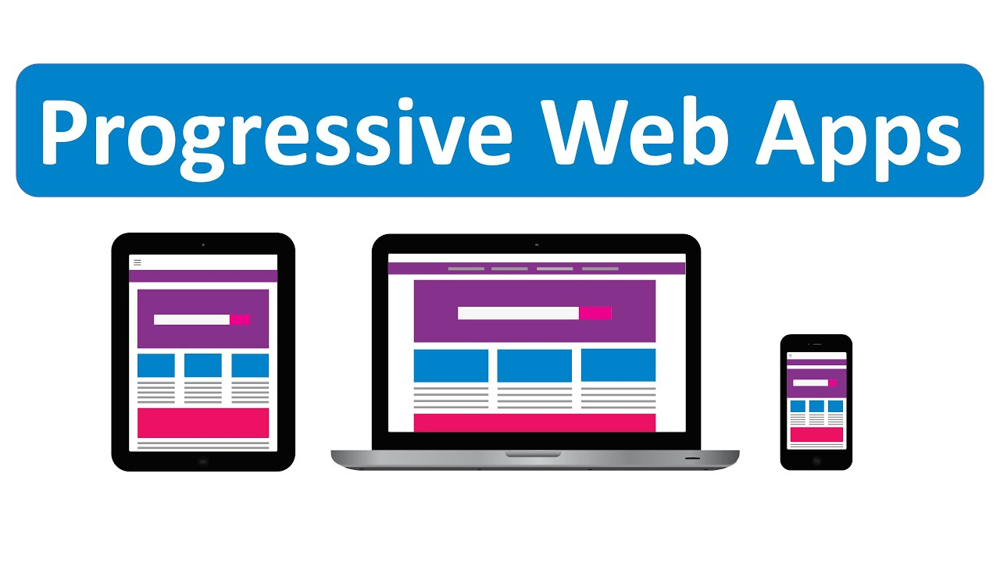

Everything you need to know about Progressive Web App (PWA)
PWA is a web application, which can be installed on your system. It works offline when there is no internet connection, leveraging data cached during your last interactions with the app.
Basic components
Web app manifest
Service worker(s)
Application shell architecture
How PWAs are Different Than Native Apps?
The native app is a self-contained program, which lives on a smartphone.
A PWA is websites that display like mobile apps.
Differences between PWAs and native apps
1. Progressive
The factor, which makes PWAs stand apart from traditional apps is a progressive enhancement. You should ensure that it truly can work with every browser type available on the market.

2. Responsive
Responsive design makes PWAs progressive and accessible on a variety of devices.
3. Connectivity-Independent
A PWA allows users to interact with the app independent of the connection. It is done by caching the app data ahead of time.
4. App-like
This page can be added to the home screen of a device and users can interact with the app as though it were a native app.
Why Do We Need a Progressive Web App?
Fast
Reliable Experience
Integrated User Experience
Engaging
How to Build a PWA?
PWA technology makes the process of accessing app functions convenient for users.